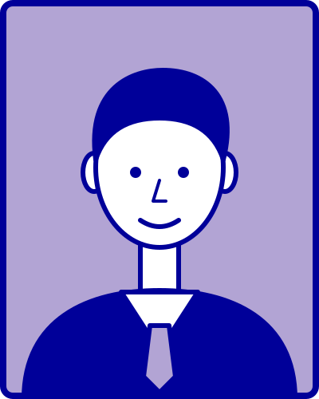

№210 Группа исследования молекулярных материаловГрИММ · ИНЭОС РАН
Группа исследования молекулярных материалов (ГрИММ) сформирована в 2024 году из сотрудников Лаборатории «Центр исследования строения молекул» (ЦИСМ), созданной как отдельное структурное подразделение ИНЭОС РАН в 2017 году на основе существовавшего с 2016 года научно-технического центра рентгенодифракционных исследований им. Ю.Т. Стручкова. В 2018 году она была расширена за счет включения в его структуру лаборатории структурных исследований полимеров ИНЭОС РАН.
С момента своего создания под руководством Ю.В Нелюбиной лаборатория ЦИСМ проводила научные исследования по разработке новых материалов и устройств, в том числе при помощи методов 3D-печати и машинного обучения, для молекулярной электроники и спинтроники, сенсорики, катализа, медицинской диагностики и терапии, контроля качества пищевой продукции. До 2024 года она также выполняла функции Центра коллективного пользования (ЦКП) научным оборудованием ИНЭОС РАН. После выделения из ее состава ЦКП в 2024 году преобразована в Группу исследования молекулярных материалов (ГрИММ), продолжающей научные традиции лаборатории ЦИСМ под руководством А.Н. Родионова.
Мы в СМИ
- Лекция на научно-популярном лектории Форум Ломоносов «Как молекулярный дизайн позволяет создавать химические вещества с нужными магнитными свойствами»
- Критический анализ научной инфраструктуры РФ для ведущего бизнес-издания «Инструменты для науки»
- Серия пресс-релизов «Новое соединение для хранения информации», «Принципиально новый подход к синтезу магнитного переключателя», «Управляемые химические соединения для электроники будущего» и т.п.
Сотрудники
Руководитель группы: к.х.н. Родионов Алексей Николаевич

- в.н.с. д.х.н. Нелюбина Ю.В. (бывший заведующий лабораторией ЦИСМ)
- с.н.с. к.х.н. Хакина Е.А.
- с.н.с. к.ф.-м.н. Наумкин А.В.
- н.с. к.х.н. Никовский И.А.
- н.с. к.х.н. Алиев Т.М.
- н.с. к.х.н. Волков И.О.
- м.н.с. к.х.н. Пак А.М.
- м.н.с. Злобин И.С.
- м.н.с. Сафиуллина Э.С.
- инж.-иссл. Захарова Д.В.
- ст.лаб. Аксенова С.А.
- ст.лаб. Антошкина Е.П.
- ст.лаб. Бабаскина М.М.
- ст.лаб. Даньшина А.А.
- ст.лаб. Липатов Е.С.
- ст.лаб. Никитинский А.С.
- ст.лаб. Рекут Н.А.
- ст.лаб. Синельников А.Н.
- ст.лаб. Струнин Д.Д.
- ст.лаб. Титов К.О.
- ст.лаб. Торопов П.А.
- ст.лаб. Тугушев М.Д.
Награды и премии
- 2023
- Премия за лучшую научную работу, выполненную в области химической физики (Павлов А.А.)
- 2021
- Премия Правительства Москвы Молодым ученым (Нелюбина Ю.В.)
Наши контакты
Если вам интересно выполнение научной работы под руководством одного из сотрудников, напишите на нашу почту:
grimmlab@ineos.ac.ruВ теме письма укажите вуз, курс обучения и намерение пройти собеседование.